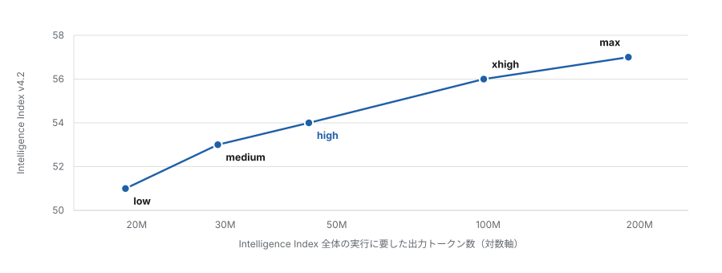
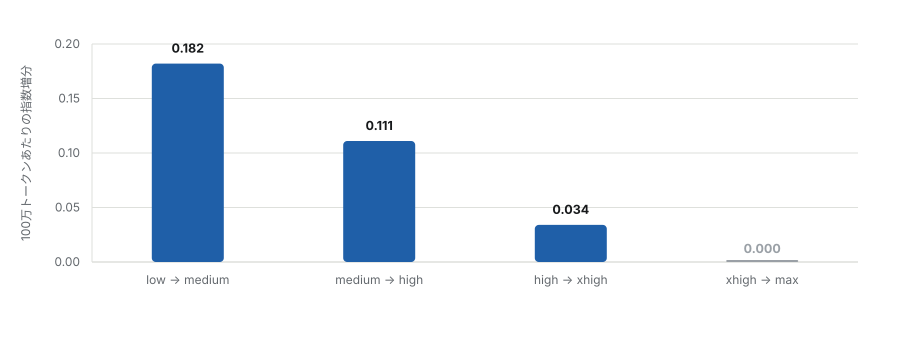
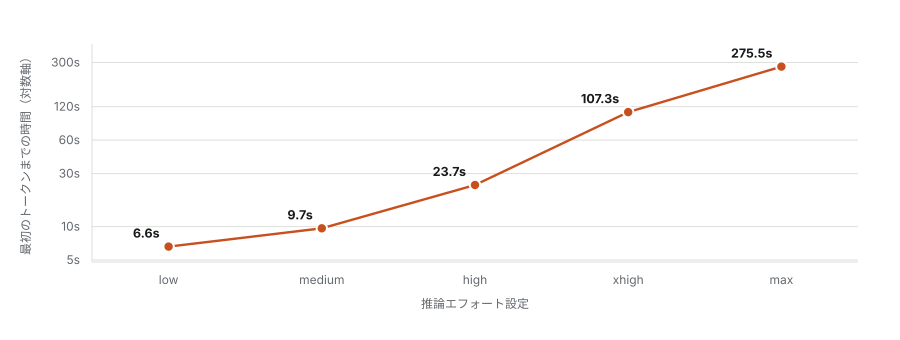
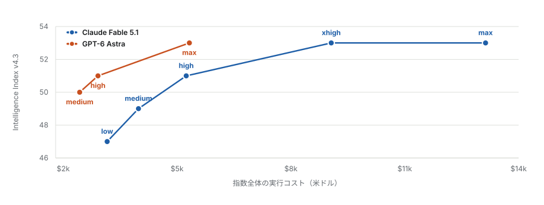
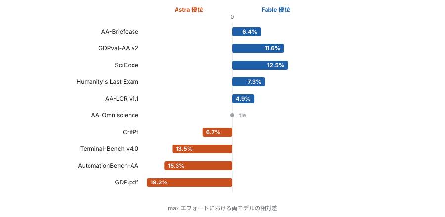
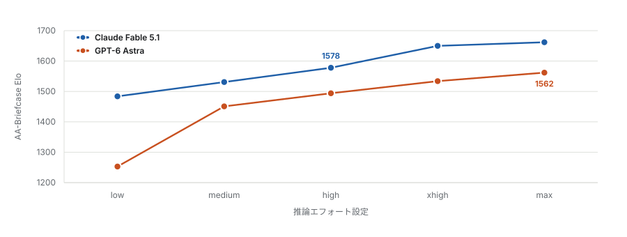

推論エフォートは品質のつまみではない。すでにコンテキストウィンドウに入っている材料に対して、どれだけ熟慮に費やしてよいかという予算である。この区別が分析全体を決定する。エフォートを上げるとは、モデルが答えを確定する前により多くのトークンを推論に費やせるようにすることであり、モデルがすでに見ている材料から答えを導くこと自体が難しい場合には有効である。しかし目の前にある材料が誤っている場合には効かない。したがって 5 段階は熟慮予算曲線上の 5 点であり、問うべきはその曲線がどこでコストを回収しなくなるかである。現行の指数における答えは私の予想よりも早く、そしてより重大だと考える選択は、まったく別のところにあった。
指数バージョンについての注記
Artificial Analysis は Intelligence Index v4.2 を廃止し、全モデルを v4.3 で再採点した。v4.3 のエージェント型コーディング要素は Terminal-Bench v2.1 ではなく v4.0 である。両バージョンは比較可能ではなく、モデルが変わったのではない。変わったのは測定の側だけである。本ページの数値はすべて v4.3 である。
第一節エフォートが実際に制御しているもの
Fable 5.1 には low、medium、high、xhigh、max の 5 段階がある。Anthropic は Claude Code では high を、コンシューマ向けの各面では medium を既定値としている。Artificial Analysis は 5 段階すべてを評価し、同一の Intelligence Index v4.3 スイートを各設定で実行している。これはワークロードを固定したままエフォート引数のみを変動させた唯一の公開データセットである。
ワークロードを固定している点は見た目以上に重要である。公開されているエフォート比較はいずれも、固定された課題集合に対してモデルがどれだけ熟慮に費やしたかの比較であって、形の異なる課題における性能の比較ではない。以下の曲線が精確に測定しているのは、問題が固定され正しく指定されている条件下での追加的熟慮の収益という一点である。大規模な実コードベースで支配的だと私が見ている失敗様式、つまり誤ったファイルから問題が指定される事態については何も語らない。
第二節曲線と、それが平坦になる地点
横軸は対数である。支出が倍増するごとに一定の収益が得られる関係は直線として現れるため、下向きの屈曲は尺度の産物ではなく実際の収穫逓減を意味する。

この末端の平坦部分は v4.3 で新たに現れたものである。旧指数では xhigh と max のあいだになお 1 ポイントの差があった。現在それはない。Fable が提供する最も高価な設定は、この評価上、一段下の設定と区別がつかないと読んでいる。
第三節最後の設定は何も買わない

限界トークンがなお認識可能な仕事をしていると見て取れる最後の設定は high である。絶対効率として表しても同じ崩壊が現れる。low では 100 万トークンあたり 1.42 指数ポイント、high では 0.82、max では 0.28 である。
第四節最も悪くスケールするのはレイテンシである
トークンは請求書に現れるコストである。最初のトークンまでの時間は体感されるコストであり、価格よりはるかに悪くスケールする。エフォート予算は最初の出力トークンが放出される前に消費されるため、熟慮のコスト全体が待ち時間に前倒しされる。

第五節もう一つの軸、どのモデルを選ぶか
ここまではすべて一方の引数を変動させたものである。より興味深い比較はもう一方を変動させる。GPT-6 Astra は同一の v4.3 スイートで、同一の表示価格、すなわち入力 100 万トークンあたり 10 ドル、出力 100 万トークンあたり 50 ドルで評価されている。そのためコスト比較は異例に明快である。支出の差はすべて価格ではなくトークン効率の差である。

指数の得点が話のすべてであれば結論は単純であり、しかも Fable に有利ではない。以降でこれを複雑にしていくが、その複雑さを出発点と取り違えられたくないので、先にこの点をはっきりさせておく。
第六節10 のベンチマーク、そして判定は分かれる
指数は 10 の評価の合成である。合成値での引き分けは、その下にある大きな差と両立する。そしてここでは差は大きく、しかも両方向を向いている。

分かりやすい筋書きに反する 2 つの結果を、個別に取り上げておきたい。CritPt は Astra が取る。32 対 30 である。CritPt は研究水準の物理推論であり、11 の下位分野にわたる 50 名超の物理研究者が寄稿した未発表のフロンティア問題 71 題を、当て推量に耐える形式で出題する。Fable の優位が本質的に自然科学の知識の深さによるのであれば、勝つべきはこのベンチマークである。しかし勝っていない。AA-Omniscience は 43 で引き分けるが、その引き分けの下で Fable は素の事実正答率 67 パーセントを記録しており、これはリーダーボード全体の最高値である。この指数は確信を伴う誤答を減点し、棄権を評価する。したがって Astra の同水準は、より多く知ることによってではなく、より多く答えを控えることによって買われたものだと読んでいる。
第七節唯一の同一エフォート比較
ここまでの数値はすべて両モデルの max エフォートでの比較であり、それは誰の実運用構成でもない。AA-Briefcase は両モデルを 5 段階すべてで公表している唯一の評価であり、したがって入手可能な唯一の真に同一条件の比較である。長期にわたるエージェント型知識労働を採点するもので、4 つの複数週プロジェクト、91 課題を、ルーブリック通過率、分析品質、提示品質の合成 Elo で評価する。

ここでの大きさはエフォートのつまみと直接比較する価値がある。単位が同じだからである。Fable をエフォート範囲の全域、low から max まで動かすと 178 Elo を得る。エフォートを固定して Astra を Fable に入れ替えると 84 から 231、典型的にはおよそ 100 を得る。このベンチマーク上では、モデルの選択はエフォート設定の選択の半分から全体に相当する価値をもつ。これが表題に置いた主張であり、AA-Briefcase は、それを断言ではなく測定として示せる場所である。
第八節この分裂が実際に捉えているもの
勝敗は無作為に散らばってはいない。Fable が取るのは AA-Briefcase、GDPval-AA v2、AA-LCR、Humanity's Last Exam、SciCode である。すなわち情報密度の高い入力に対する長期的作業、長文脈推論、知識の想起と統合である。Astra が取るのは Terminal-Bench v4.0、AutomationBench-AA、GDP.pdf、CritPt である。すなわち比較的短期のツール実行、自動化、抽出、制約下の問題解決である。AA-Omniscience も引き分けを分解すればこの型に収まる。素の想起は Fable に、較正された棄権は Astra に有利だからである。
ここから私が読み取る機序は、一方が賢いということではない。両者は文脈長と作業の時間的射程にわたって異なるプロファイルをもつ、ということである。すでに読み込まれた大量の材料に対する持続的推論は Fable が引き離す領域であり、短く適切に区切られたツール駆動の課題は Astra が引き離す領域である。これらは異なる仕事であり、相応の規模をもつコードベースはほぼすべての課題において前者を課す。文脈は常に大きく、推論は常に多数の断片を同時に保持しなければならないからである。
保持すべき区別
指数の得点が答えるのは「このモデルは固定された公開スイート上でどれだけ有能か」である。「どのモデルが自分の仕事の形に合うか」には答えない。ここでは両者が乖離している。モデルは 53 で並びながら、SciCode では一方向に 12 パーセント、Terminal-Bench では逆方向に 13 パーセント異なる。自分の課題の形に似たベンチマークを選び、合成値は無視するのがよい。
第九節このエビデンスが決着させられないこと
掃討比較 10 件のうち 9 件は両モデルの max エフォートでのものであり、それは多くの人が実際に使う設定ではない。AA-Briefcase が唯一の同一エフォート系列であるため、第七節で私が置いた中心的主張は単一のベンチマークに依拠している。Terminal-Bench v4.0 はいずれのモデルについても xhigh と max しか公表しておらず、コーディング固有の比較は high や medium にはまったく存在しない。
差のいくつかはベンチマークのノイズに収まる程度に小さい。CritPt の 2 ポイント差や AA-LCR の 4 ポイント差だけを根拠に、私なら何かを判断することはしない。ここで意味をもつのは 10 の評価にわたる一貫した型の一部としてであり、主張は個々の行ではなくその型である。
私がどうしても越えられない限界は、測定ではなく構成概念にある。これらは、ハーネスによってコンテキストが正しく供給された課題群にわたる集計値である。相応の規模をもつコードベースにおいて支配的な失敗様式は、正しいファイルに対する浅い推論ではなく、誤ったファイルに対する確信に満ちた推論である。エフォートを上げることはこの失敗を悪化させる。同じ誤った前提から、より精緻でより尤もらしい推論を生み出すからである。エフォートのつまみもモデルの選択も、正しい材料をモデルの前に置くことの代替にはならない。そしてその代償がどれほどのものかは、ここで測定されたもののどれからも見積もれない。
関連する測定器具
ここで測られたもののうち、エフォートでは改善できない唯一の量が知識である。そしてそれに最も近い公開ベンチマークである AA-Omniscience では、上位二モデルが並んでいる。問いをそこで置き去りにするのは不十分だと考える。リーダーボードは他人が選んだ主題の上での平均だからだ。クローズドブック検査では、同じものを自分の材料で自分の言葉で測るために、プロンプト、三十問、解答鍵、採点方式を公開している。
つまみは high に達する時点でほぼ使い果たされ、xhigh より上では完全に使い果たされている。モデルの選択はまったく使い果たされておらず、両者を同一設定で測る唯一のベンチマーク上では、つまみ全体に匹敵する価値をもつ。エフォート設定に費やされているのを見かける注意の大半は、どのモデルがコードを読んでいるかに向けたほうがよく、そのほぼすべては、モデルがどのコードを読んでいるかに向けたほうがよい。
出典
一次データ。Artificial Analysis: Claude Fable 5.1 の low / medium / high / xhigh / max 各モデルページ、GPT-6 Astra の medium / high / max 各モデルページ、GPT-6 Astra 対 Claude Fable 5.1 の比較ページ、および AA-Briefcase、AA-Omniscience、CritPt、SciCode、Terminal-Bench v4.0 の各リーダーボード。数値はすべて Intelligence Index v4.3 である。2026 年 9 月 8 日取得。
ベンダーおよびベンチマーク資料。Anthropic「Introducing Claude Fable 5.1 and Claude Mythos 5.1」2026 年 9 月。OpenAI「GPT-6 Astra」2026 年 9 月。Tian M, Gao L, Peng H, et al.「SciCode: A Research Coding Benchmark Curated by Scientists」NeurIPS Datasets and Benchmarks, 2024。
本ページの導出量、すなわち 100 万トークンあたりの指数ポイント、段階ごとの限界収益、ベンチマークの相対差、第七節の Elo 比較は、いずれも出典からそのまま引いたものではなく、公表値から私が計算した。上記の表から再現できる。
AI 支援の開示。データ取得、計算、図版生成、草稿作成および対訳翻訳には AI 支援を用いた。この記事のためにベンチマークを自分で実行したことはない。ここに示したスコアはすべて公開された第三者またはベンダーの数値である。
日本語版は英語版と同一の分析の翻訳である。英語版はこちら。